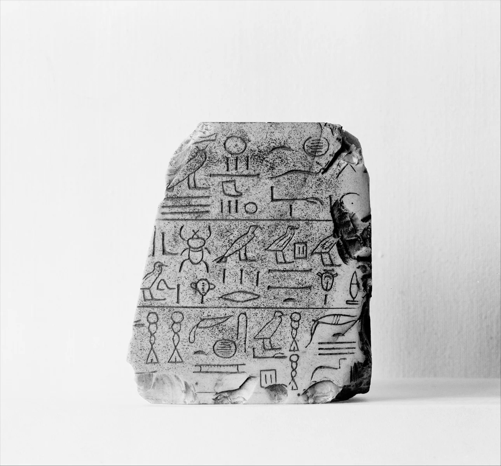
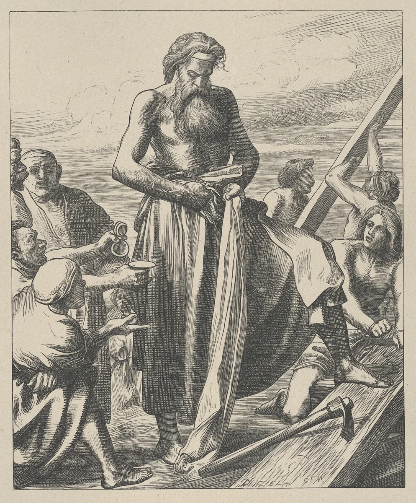
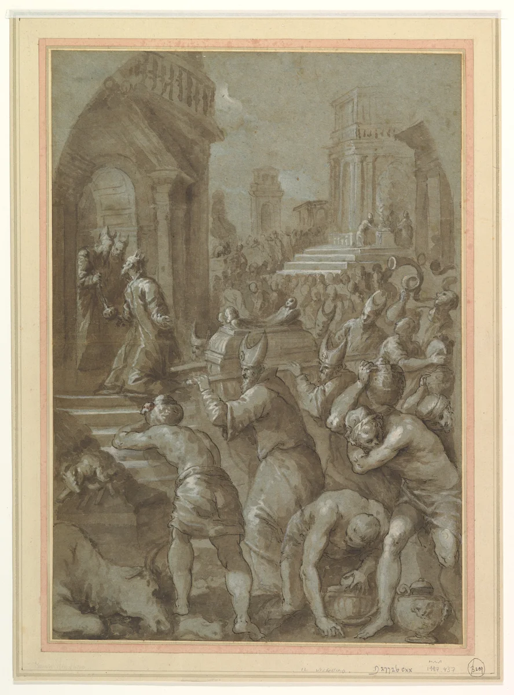
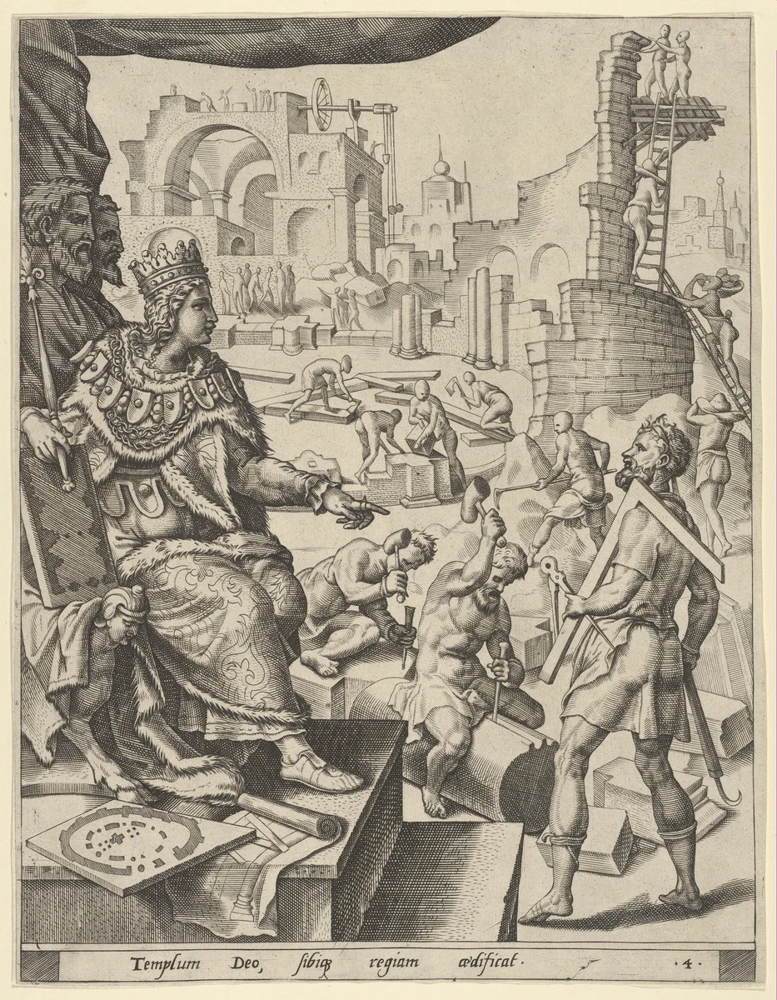

Sacred Measurements & Numbers
Scripture does not wave its hands about God's buildings. It gives a tape measure: 300 × 50 × 30 for a boat, 2½ × 1½ × 1½ for a chest, a 20-cubit cube for the holiest room on earth, and a city measured by an angel. This lesson reads those numbers closely, builds them to scale, and asks the hard question: what do the numbers do?
Genesis 6 · Exodus 25–27; 36–38 · 1 Kings 6–7 · Ezekiel 40–47 · Revelation 21- The cubit
- Noah's Ark
- Ark of the Covenant
- Tabernacle
- Temples
- The two cubes
- Other measures
- Biblical numbers
- Gematria lab
- Reading with care
- Model lab
- Quiz
Read it. Measure it. Explain it.
By the end, you can convert cubits with a stated assumption, build a scale model, and distinguish a measurement in the text from a reconstruction or interpretation.
- Measure · 10 minutes. Measure your forearm, choose a cubit, and compare the two arks.
- Build · 15 minutes. Explore the plans, then use the model lab to size a paper model.
- Interpret · 10 minutes. Explore a number, read its passage, and explain what evidence supports your reading.
Keep three labels in your notes: Text (dimensions actually stated), Model (a reconstruction using assumptions), and Interpretation (an explanation of meaning). They answer different questions.
📏 Measuring stick — every length on this page converts live
The ruler God's builders used: your own arm
Exodus 25:10 · Ezekiel 40:5 · Deuteronomy 3:11
The Bible's basic length is the cubit (Hebrew ʾammah) — the distance from the elbow to the tip of the middle finger. It is a body measure, so it came with a built-in problem: arms differ. Everyone in the ancient Near East knew it, so standards were set. Smaller units are body parts too:
Two cubits are in play
- The common cubit — 6 handbreadths, about 17.5 in (44.5 cm). A Hebrew inscription from Hezekiah's Tunnel in Jerusalem says the tunnellers cut 1,200 cubits; the tunnel measures about 533 m, which works out to ≈ 44.4 cm per cubit. That is real, on-the-ground evidence for the Judean cubit.
- The royal (long) cubit — 7 handbreadths, about 20.6 in (52 cm), the Egyptian royal cubit. Ezekiel's vision uses exactly this: "a cubit and a handbreadth" (Ezek 40:5; 43:13).
Do this now · find your own cubit
Measure from your elbow to the tip of your middle finger in centimetres. Press My cubit in the measuring stick above and type it in. The whole page — Noah's boat, the Ark, the Temple — instantly rescales to you. Compare with a classmate. That difference is exactly why a standard cubit was needed.
Noah's Ark: a barge with a spec sheet
Genesis 6:14–16; 7:11–24; 8:4
This is the first measured structure in the Bible, and it arrives as a design brief: wood (gopher, an otherwise unknown word), rooms, pitch "within and without," a window a cubit from the top, a door in the side, and three decks (6:14–16).
| Part | Cubits | Converted | Source |
|---|---|---|---|
| Length | 300 | Gen 6:15 | |
| Breadth (beam) | 50 | Gen 6:15 | |
| Height | 30 | Gen 6:15 | |
| Window from the roof | 1 | Gen 6:16 | |
| Water over the mountains | 15 | Gen 7:20 |
What the numbers tell you
- It is a box, not a ship. No bow, no keel, no steering is described. A 6 : 1 long, wide, flat-bottomed hull is the shape you build to float and stay upright, not to travel — which fits a story about surviving, not sailing.
- Fifteen cubits. Genesis 7:20 says the water rose fifteen cubits above the mountains. Many readers note that this is exactly half the Ark's 30-cubit height — about how deep a loaded hull sits. That match is an inference, not a statement in the text, but it shows how carefully Genesis keeps its numbers consistent.
- A neighbour's boat. In the Babylonian flood story (Gilgamesh, Tablet XI) the survivor's vessel is a cube about 120 cubits on each side, with seven decks. A cube spins in a current and cannot be steered or kept upright; Genesis's elongated hull is the sensible one. Same event told, very different engineering.
- Counting days. The Flood chronology is numbers too: rain for 40 days and nights (7:12), waters prevailing 150 days (7:24), landing on Ararat on the 17th day of the 7th month (8:4).
The Ark of the Covenant — and the furniture around it
Exodus 25:10–40; 27:1; 30:1–2
Two boxes called "ark" (Hebrew tēvāh for Noah's; ʾărôn for the Covenant chest) are separated by a thousand years and an enormous difference in scale — one holds the world's survivors, the other holds the tablets of the covenant. The Covenant Ark is small enough for four priests to carry on poles: a hand-built chest you could fit in the back of a van.
| Object | L × W × H (cubits) | Converted | Made of | Source |
|---|---|---|---|---|
| Ark of the Covenant | 2½ × 1½ × 1½ | Acacia, overlaid with gold inside & out | Ex 25:10 | |
| Mercy seat (lid) | 2½ × 1½ | Pure gold, with two cherubim of beaten work | Ex 25:17–19 | |
| Table of the Presence | 2 × 1 × 1½ | Acacia, gold overlay; 12 loaves | Ex 25:23–30; Lev 24:5–9 | |
| Altar of incense | 1 × 1 × 2 | Acacia, gold overlay; horns | Ex 30:1–3 | |
| Altar of burnt offering | 5 × 5 × 3 | Acacia, bronze overlay; hollow | Ex 27:1 | |
| Lampstand (menorah) | no size given | — | One talent of pure gold, 7 lamps | Ex 25:31–40 |
| Bronze basin (laver) | no size given | — | Bronze, made from women's mirrors | Ex 30:18; 38:8 |
Look at what is not measured
The lampstand is described in loving detail — cups, buds, blossoms, branches — but never given a height. The same is true of the basin and the cherubim on the mercy seat. The text measures what must fit (boxes, boards, curtains) and spends its words on beauty for what must be crafted. And the verdict at the end: Moses built it "just as the LORD had commanded" (Ex 39–40).
The Tabernacle: a portable sanctuary, to scale
Exodus 26–27; 36–38The tent was a rectangle inside a rectangle, facing east. The court is stated directly: 100 cubits long and 50 wide, fenced by linen hangings 5 cubits high on 60 pillars (Ex 27:9–18). The tent itself is never given as a single dimension; it is assembled from stated parts:
- Frames (boards) 10 cubits tall × 1½ wide (26:16): 20 on the south, 20 on the north, 6 + 2 corner on the west (26:18–25).
- So the length is 20 × 1½ = 30 cubits; the width is about 10 (6 boards = 9 cubits plus the corners).
- A veil on four pillars cuts it into a Holy Place (20 × 10) and a Most Holy Place (10 × 10) (26:31–33). Exodus never prints "10 × 10 × 10" — that comes from the arithmetic, and it is a perfect cube if the room is 10 cubits tall (the same height as the boards).
To scale: pick a view
Does the roof fit? Reverse-engineering the curtains
Four layers covered the frame (26:1–14). Only two have printed sizes, and they are a nice test of the arithmetic:
| Layer | Size | The fit (flat-roof reconstruction) |
|---|---|---|
| Fine linen, 10 curtains in two sets of 5 | 28 × 4 each | 28 cubits across the tent = 10 over the roof + 9 down each side — it stops one cubit short of the ground (26:1–2) |
| Goat hair, 11 curtains | 30 × 4 each | 30 across = 10 + 10 down each side — reaches the ground. The extra curtain doubles at the front, the extra half hangs behind (26:7–13) |
| Ram skins dyed red; durable leather | no size given | Cut to cover the above (26:14) |
Scholars also propose a pitched (ridge) roof; a pitched roof changes the fit. Either way, the printed sizes work out with whole numbers — and that is the point.
Auditing Moses' books
The metal bill is in Exodus 38:24–31, and the numbers close exactly. A talent is 3,000 shekels (38:25–26).
- Census tax: every man 20 years or older gave a half-shekel. Numbers 1:46 counts 603,550 men. 603,550 × ½ = 301,775 shekels.
- Silver recorded: 100 talents + 1,775 shekels = 100 × 3,000 + 1,775 = 301,775 shekels. ✓ Dead on.
- Where it went: 100 silver sockets, one talent each (38:27) — 48 frames × 2 sockets = 96, plus 4 for the veil's pillars = 100. ✓ (And the frame count: 20 + 20 + 8 = 48.)
- Gold 29 talents 730 shekels; bronze 70 talents 2,400 shekels (38:24, 29).
Whatever else you make of the story, the writer is doing accounting, and the accounting is internally consistent. That is a feature of the text worth noticing.
Temples: Solomon's, Ezekiel's, and the second house
1 Kings 6–7 · 2 Chronicles 3–4 · Ezekiel 40–43 · Ezra 6:3
Solomon's Temple keeps the Tabernacle's plan and doubles it: the tent's 30 × 10 becomes 60 × 20 and its height of 10 becomes 30. The Holy of Holies grows from a 10-cube to a 20-cube.
| Part | Cubits | Converted | Source |
|---|---|---|---|
| The house (L × W × H) | 60 × 20 × 30 | 1 Kgs 6:2 | |
| Porch (W × depth) | 20 × 10 | 1 Kgs 6:3 | |
| Main hall (the Holy Place) | 40 long | 1 Kgs 6:17 | |
| Inner sanctuary (debir) | 20 × 20 × 20 | 1 Kgs 6:20 | |
| Two cherubim, each | 10 high · wingspan 10 | tall | 1 Kgs 6:23–26 |
| Side chambers (3 storeys) | 5 · 6 · 7 wide | → | 1 Kgs 6:5–6 |
| Pillars Jachin & Boaz | 18 high · 12 around | tall | 1 Kgs 7:15 |
| The Sea (bronze basin) | 10 across · 5 high · 30 around | across | 1 Kgs 7:23 |
A gold-plated cube, and a ring-fenced number
- Two cherubim fill the room. Each has a 5-cubit wing that touches the wall and a 5-cubit wing that meets its partner in the centre (6:24–27). 5 + 5 + 5 + 5 = 20 — the entire width of the Holy of Holies. Open the "Solomon's Temple" tab above to see it.
- Built in seven years (6:38), then the king took thirteen more for his own house (7:1) — a 7 and a 13 that most readers see as deliberate contrast.
- The Sea and π. Ten cubits across and a 30-cubit line "around" looks like π = 3. But the basin was "a handbreadth thick" (7:26); measure across the outer brim and around the inner rim and the numbers agree: (10 − 2/6) × π ≈ 30.4. Ancient builders also rounded freely. Neither reading means the Bible "got math wrong" — it means the numbers are working measures, not geometry proofs.
Variants worth knowing about
The text sometimes reports the same thing two ways. Naming that is part of reading honestly, not a problem to hide.
| Item | One account | Other account |
|---|---|---|
| Capitals on the pillars | 5 cubits (1 Kgs 7:16) | 3 cubits (2 Kgs 25:17) |
| Pillar height | 18 cubits each (1 Kgs 7:15) | "35 cubits" for the pair (2 Chr 3:15) |
| Capacity of the Sea | 2,000 baths (1 Kgs 7:26) | 3,000 baths (2 Chr 4:5) — a bath ≈ 22 L, so ~11,000 vs ~17,000 gallons |
| Goliath's height | 6 cubits and a span (Masoretic Hebrew) | 4 cubits and a span (Dead Sea Scrolls 4QSama, the Greek, and Josephus) |
Ezekiel's temple and the second house
Ezekiel is carried "in visions of God" to a very high mountain, where a man with a flax cord and a measuring reed stands at a gate (40:1–5). The reed is 6 long cubits — a cubit and a handbreadth. Over the next nine chapters he is led through gates, courts and chambers, and the measurements are given in extraordinary detail: the inner sanctuary is again 20 × 20 (41:4), and the whole temple precinct is 500 square (42:15–20) — in reeds in the Hebrew text, though many translations read cubits, which is the difference between about 1.5 km and about 260 m on a side.
The vision ends not with a building but a river: from under the threshold, a trickle measured out at 1,000 cubits at a time — ankle-deep, knee-deep, waist-deep, then a river too deep to cross (47:3–5). The measuring itself is the storytelling: the temple is a source of life that keeps growing. The city is named "The LORD is there" (48:35).
The actual second temple, authorised by Cyrus, was to be 60 cubits high and 60 wide (Ezra 6:3). Older eyewitnesses wept at how modest it looked beside Solomon's (Ezra 3:12; Haggai 2:3).
Two explicitly measured cubes in Scripture
1 Kings 6:20 · Revelation 21:15–22Almost every sacred measurement is a rectangle. Two passages explicitly describe equal length, width, and height:
- The Holy of Holies — 20 × 20 × 20 cubits in Solomon's Temple (1 Kgs 6:20), the room where God's presence dwelt over the Ark.
- The New Jerusalem — "the length and the breadth and the height of it are equal" (Rev 21:16).
John's point lands hard: the whole city is the Holy of Holies. What was once a single room, entered once a year by a single priest (Lev 16; Heb 9:7), is now the shape of the whole place where God lives with his people. There is, as John says, "no temple in it" (21:22) — the city is the temple.
The numbers inside the cube
- 12 gates, named for the twelve tribes; 12 foundations, named for the twelve apostles; 12 pearls, 12 kinds of fruit (21:12–21; 22:2).
- The wall is 144 cubits = 12 × 12 (21:17). The city is 12 × 1,000 stadia. The sealed servants are 144,000 (7:4) = 12 × 12 × 1,000. The whole picture is made of twelve: God's people, Old and New Covenant together.
- Compare the scale. The wall is 144 cubits — — against a city about 1,380 miles on a side. A wall that low next to a city that big is not an engineering detail. The numbers are doing symbolic work. Interpreters differ on exactly how literally to read them; nearly all agree that the cube and the twelves are the message.
Other measured things in Scripture
Deuteronomy 3:11 · 1 Samuel 17 · Daniel 3:1 · Zechariah 5:2 · Numbers 35:4–5| Thing | Biblical figure | ≈ Converted | Notes |
|---|---|---|---|
| Og's iron bed | 9 × 4 cubits | A king of Bashan, last of the Rephaim (Deut 3:11) | |
| Goliath | 6½ cubits (MT) / 4½ (DSS, LXX) | / | Spearhead 600 shekels of iron ≈ 15 lb; coat of mail 5,000 shekels ≈ 125 lb (1 Sam 17:4–7) |
| Nebuchadnezzar's image | 60 × 6 cubits | A 10 : 1 statue; 60 is the Babylonian base (Dan 3:1) | |
| Zechariah's flying scroll | 20 × 10 cubits | Exactly the Tabernacle's Holy Place (and Solomon's porch) — a scroll the size of the sanctuary (Zech 5:2) | |
| Levite city "belts" | 1,000 cubits of pasture; 2,000 measured per side | City in the centre, square plan (Num 35:4–5) | |
| Sabbath day's journey | 2,000 cubits | From the 2,000-cubit gap between ark and people (Josh 3:4); Acts 1:12 uses the phrase | |
| Ezekiel's river steps | 4 × 1,000 cubits | each | Ankle, knee, waist, un-crossable (Ezek 47:3–5) |
| Fathom (Paul at sea) | 20 then 15 fathoms | ≈ 120 ft then 90 ft | A fathom is 6 feet — arm-span, another body measure (Acts 27:28) |
Weights: 1 talent = 3,000 shekels (Ex 38:25–26); shekel ≈ 11.4 g (0.4 oz), so a talent ≈ 34 kg (75 lb). Measures in the table follow the common cubit unless you change the measuring stick.
Biblical numbers: signals, not secret codes
Genesis 1 · Matthew 1:17 · Revelation 7 · 13Beyond the tape measure, Scripture uses numbers as literary signals. A reader is meant to hear them the way you hear the "once upon a time" of a fairy tale: a cue about what kind of thing is happening. That is not the same as numerology — the belief that numbers hide secret information or predict events. This lesson teaches the first and warns about the second. Press a number to see where it turns up:
Choose a number above.
Patterns inside the text itself
- Genesis 1:1 in Hebrew is seven words (28 letters = 4 × 7), and 1:2 is fourteen. Whether the author planned it or not, creation is told in sevens, ending in the seventh-day rest (Gen 2:1–3).
- The Tabernacle's seven speeches. The instructions in Exodus 25–31 are introduced by seven "The LORD said to Moses" (25:1; 30:11, 17, 22, 34; 31:1, 12). The last one is about the Sabbath — echoing creation's seventh day. Many scholars read the Tabernacle as a mini-creation.
- Matthew's three fourteens. Matthew arranges Jesus' family tree as 3 sets of 14 generations (Matt 1:17), skipping a few names to make it work. 14 is also the numerical value of the Hebrew letters of David (ד + ו + ד = 4 + 6 + 4). He is saying this is David's son — in numbers. Try it in the gematria lab below.
- 153 fish. The count in John 21:11 is precise (and stated "though there were so many, the net was not torn"). What it means has been debated for 1,700 years; no explanation is certain, which is itself a lesson in humility.
Gematria lab: letters as numbers
Revelation 13:18Hebrew and Greek had no separate digits; letters did double duty: aleph = 1, bet = 2, yod = 10, qof = 100… so every word has a numerical value. Jewish interpreters later called this gematria (from Greek geōmetria); Greek writers called it isopsephy. It's a real, ancient reading technique — and the Bible invites it exactly once, openly:
Many scholars solve it with Nero Caesar written in Hebrew letters (Nrwn Qsr): 50 + 200 + 6 + 50 + 100 + 60 + 200 = 666. An early variant of Revelation reads 616 — the number you get when "Nero" is spelled the Latin way without the final n (Nrw Qsr). One writer, one emperor, two spellings, both counting: that is a strong sign the puzzle was meant to be solved by John's first readers in the 90s AD, not by us as a code about our future.
Final-form letters (ך ם ן ף ץ) use the ordinary values 20, 40, 50, 80, 90 here, the common "standard" method. Other methods exist.
Reading numbers with care
Numbers can deepen your reading — or hijack it. Three guardrails keep a student honest:
- Start with genre. A building plan (1 Kings 6), a census (Numbers 1), a poem (Psalm 90:10 — "seventy years"), and an apocalypse (Revelation) use numbers differently. A text can be exact and symbolic — the Temple and New Jerusalem both are — but you decide which by reading how the author uses it, not by wishing.
- Pattern is not proof. Find a pattern in a short text and you can find one anywhere — that is how "Bible codes" and doomsday date charts get made. Ask: does the author point at the number (Rev 13:18; Matt 1:17), or are you adding it? Does the pattern hold up when you check the variants (the capital's 5 vs. 3 cubits)?
- Jesus closes the door on date-setting. "Of that day and hour no one knows" (Matt 24:36). The Bible's numbers are given to show order, covenant and God's character, not to schedule the future.
A good question to bring to every number
"What does this number do for the story?" — draws attention, shows completeness, echoes something earlier, proves a promise kept? If you can answer that from the text, you're reading. If the only answer is "it predicts…", step back.
Scale-model workshop
Predict first: if you double the model scale, what happens to length, floor area, and volume? Then change the scale below. These are rectangular bounding boxes, not estimates of usable interior space.
Choose 0.1–10 cm per cubit. At 1 cm per cubit, a 20-cubit side becomes 20 cm. This paper scale is independent of your selected historical cubit.
Reveal the scaling rule
Double every length: floor area grows by 2² = 4 and volume by 2³ = 8. Changing your assumed historical cubit also changes reconstructed area and volume by these powers; the proportions in cubits stay the same.
Exit ticket
Choose a dimension. Record its passage, its value in cubits, your chosen cubit in centimetres, and the multiplication that converts it. Finish with one sentence explaining what the text states and what your model assumes.
Check your measure
Score: 0 / 8
Do it · build it · discuss it
- Chalk the Ark. Using your own cubit, mark the Ark of the Covenant (2½ × 1½) on the floor with tape, then the Holy of Holies (a 10 × 10 square), then Noah's Ark (300 × 50 — you'll need a hallway, a field, or a string).
- Walk a sabbath day's journey. 2,000 of your cubits. Where do you end up?
- Cardboard Tabernacle. Build the tent at 1 cubit = 1 inch from the printed numbers; check the curtain fit in the table above.
- Debate. Is the New Jerusalem a literal city or a symbol made of numbers? What would each reading lose or keep?
- Write. Choose one number from the lab. Find three passages that use it, and for each write one sentence beginning "The number does this: …".
Related lessons: The Tabernacle · The Temple & God's Presence · Genesis · Genesis 10: The Table of Nations (the "70 nations") · Revelation · Ezekiel · Exodus.
Scripture quotations in this lesson are from the King James Version (public domain). Cubit evidence: the Siloam (Hezekiah's Tunnel) inscription, the Egyptian royal cubit rods in museum collections, and the standard handbreadth divisions given in Ezekiel 40:5. All conversions are approximate; scholars disagree about the cubit in particular passages.